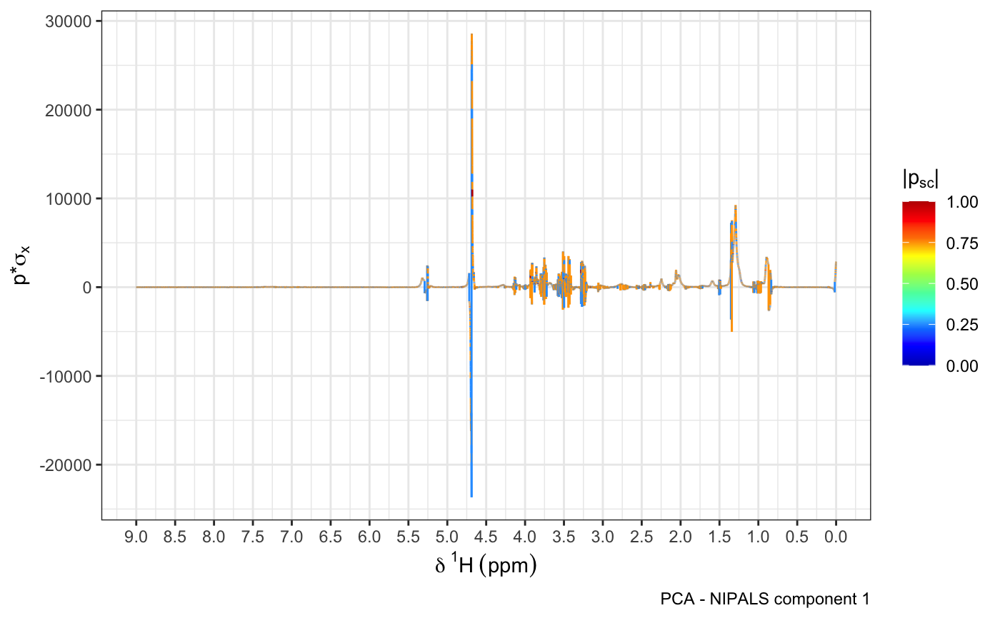

plotload.RdVisualising PCA or OPLS loadings for NMR data
plotload( mod, shift = c(0, 10), pc = 1, type = "Backscaled", title = NULL, r_scale = FALSE )
| mod | PCA or OPLS model generated via metabom8 package functions. |
|---|---|
| shift | ppm region to visualise. |
| pc | index of principal component to visualise, set to 1 if input model is OPLS |
| type | Type of loadings visualisation, either |
| title | Plot title. |
| r_scale | logical, adjust limits of color gradient to 0 and 1 (only applies for type stat reconstruction) |
ggplot2 plot object
OPLS loadinsg visualisatoin for NMR data: If type='Statistical reconstruction' the function calculates the covariance (y axis) and Pearson's correlation (colouring) of the predictive OPLS scores with each X variable (x axis is ppm variable). If type='Backscaled' the OPLS loadings are backscaled with X feature standard deviations. Results are plotted over ppm, coloured according to OPLS model weights. Often, the latter method visualises model importance more robust due to the presence of false positive correlations. PCA: Function always calculates the statistical recostruction.
NA
Cloarec, O., et al. (2005). Evaluation of the Orthogonal Projection on Latent Structure Model Limitations Caused by Chemical Shift Variability and Improved Visualization of Biomarker Changes in 1H NMR Spectroscopic Metabonomic Studies. Analytical Chemistry 77.2, 517-26.
Other NMR:
alignSegment(),
bline(),
excise1d(),
get.idx(),
lw(),
matspec(),
noise.est(),
normErectic(),
ppick(),
read1d_raw(),
read1d(),
specload(),
spec(),
stocsy1d_metabom8-class,
stocsy(),
storm()
Torben Kimhofer tkimhofer@gmail.com
torben.kimhofer@murdoch.edu.au
#>plotload(model, pc=1)